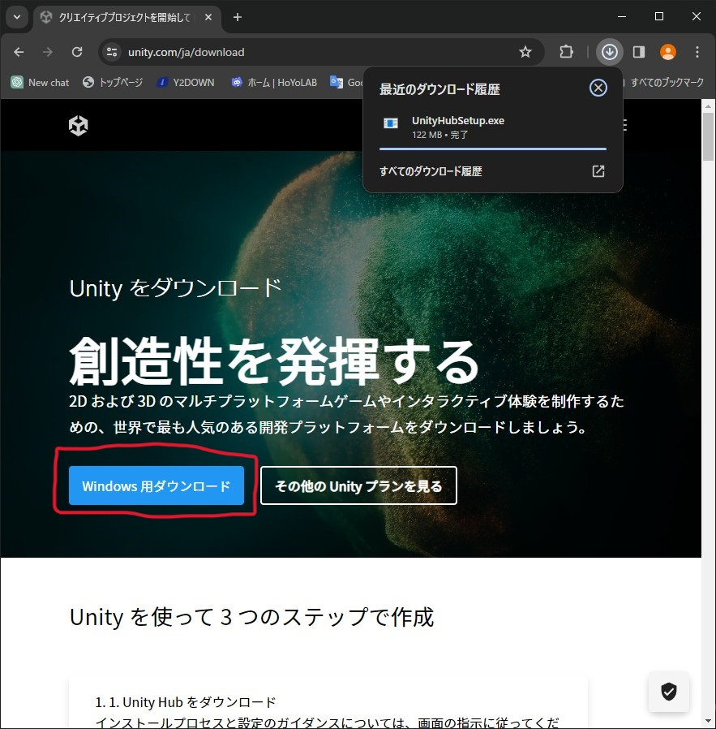
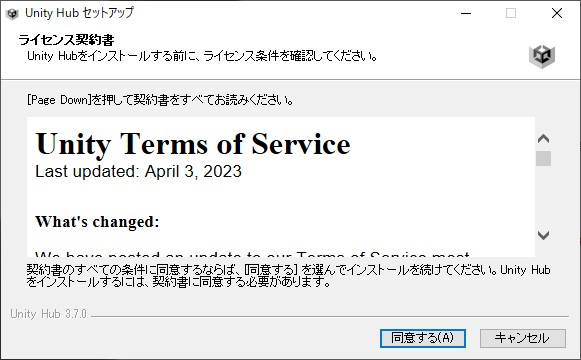
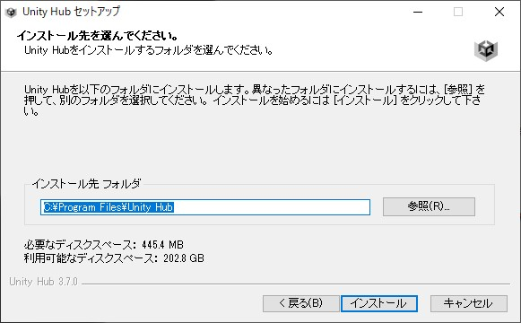
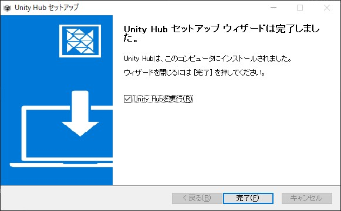

Unity Hubのセットアップ
Unityをインストールしたりアップデートしたりするのに使うソフトウェアです。プロジェクトの管理もUnity Hubがやってくれます。
1.Unity Hubのインストーラーをダウンロードする
Unity Hubインストーラーダウンロードサイト上のリンクにアクセスすると、下のようなサイトに飛びます
赤枠で囲ったWindows用ダウンロードを押すとインストーラーのダウンロードが始まります。
2.インストーラーを起動
ダウンロード先を変更していない限り、ダウンロードフォルダにインストーラーが入っています。容赦なく起動しましょう
学校から支給されているタブレットPCにインストールしようとしている人は、管理者権限がうんぬんかんぬんでインストーラが起動できません。先生に頼んでパスワード入れてもらってください
管理者権限とか出てきて焦ってる人は落ち着いてはいを押してください。これくらい日常茶飯事です。
3.インストーラーの手順に従いインストールを進める
3-1.ライセンス契約書の同意
ライセンス契約書が出てきます。ちゃんと中身を読んでから同意するべきですが、読み飛ばして同意するを押してください。本当は読むべき書面です。
3-2.インストール先の選択
インストール先の選択画面です。特にこだわりがなければ変える必要はありません。もし変えたいならば、ファイルパスに日本語が入らないようにしてください。
そのままウインドウ下部にあるインストールをクリックするとインストールが始まります。
インストール完了
インストールが完了したらそのまま完了をクリックしてセットアップヴィザードを終了してください。